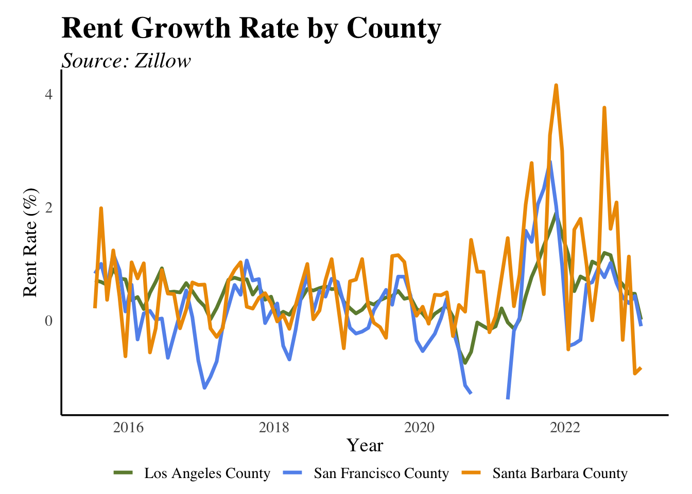
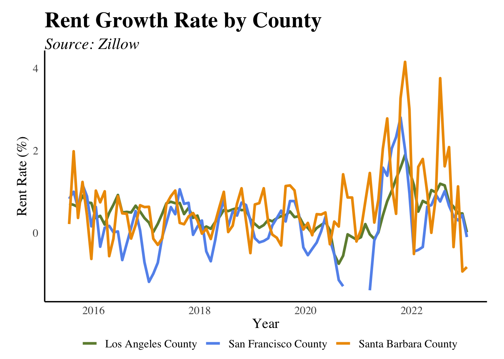

Economic
Standard of Living
South County Household Income Increases

What is the measure?
This data consists of money income – exclusive of certain money receipts such as capital gains – before payment of personal income taxes, Social Security, union dues, Medicare deductions and the like. It excludes non-cash benefits such as food stamps or health benefits. The data is adjusted for inflation.
Real Average Salary per Worker Rises

What is the measure?
Real Average Salary is computed by summing total wages and salaries paid to all workers in the County, and then dividing by the total number of wage- and salary-earning employees. This is a countywide measure and is adjusted for inflation.
Job Quality and Quantity
Pandemic Impacts Industry Employment
What is the measure?
Employment in Santa Barbara County, sorted by industry. This data was formulated by the UCSB Economic Forecast Project, using California Employment Development Department (EDD) data.
Why is it important?
Shifts in the type of employment and associated wages can impact the real average worker’s salary and either enhance or constrain career opportunities for the local workforce.
How are we doing?
The pandemic hit Leisure and Hospitality, Government, and Professional and Business Services, initially, the hardest. Following the onset of the pandemic in 2020, there has been general employment growth in all industries with most industries returning to pre-pandemic employment. Professional and Business Services’ employment has grown beyond pre-pandemic numbers, while Leisure and Hospitality has had the most rapid growth.
Housing Affordability
Rental Rates Soar Post-pandemic
 

What is the measure?
Average apartment rental rates from Zillow’s Observed Rent Index (ZORI) data for Santa Barbara County. The data displays median asking rent while controlling for differences in available rental stock. Percent growth in rent rate is by month.
Why is it important?
Similar to the housing affordability index, the cost of renting apartments is a major component of the cost of living in Santa Barbara County. The percentage change in apartment rental rates can be compared against measures of family income to determine if wages are keeping pace with rising rents.
How are we doing?
Rental rates throughout Santa Barbara County had the sharpest increase in August of 2021 at 4.16% , the highest growth rate increase in one month of all three counties observed since 2015. The sharpest decline in rental price for Santa Barbara County was in September of 2022 at -0.94%. Since the onset of the COVID-19 pandemic in March of 2020, median rent grew from $2566.20 to $3619.75 by October of 2022, a 41% increase.